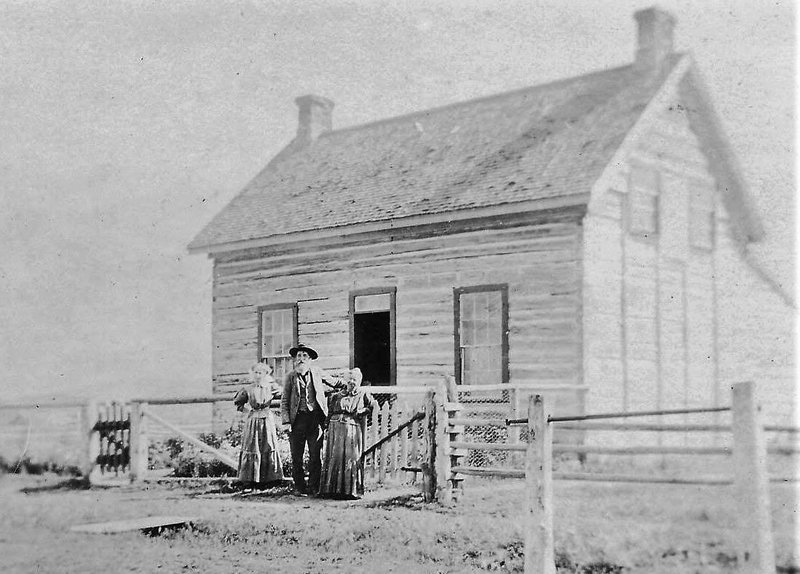
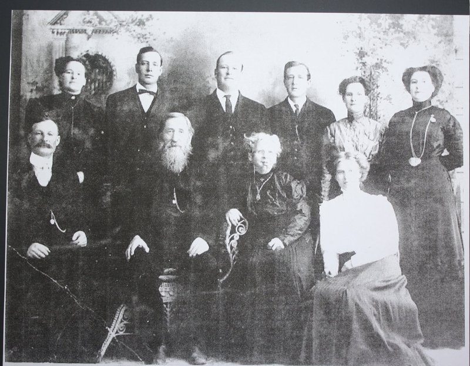

Morrisite.org › Places › Morristown
Morristown
Soda Springs, Idaho. The settlement at Soda Springs founded in May 1863 under the protection of Patrick Edward Connor.

The Morrisites were among the founders of Soda Springs, one of the oldest towns in Idaho. Connor reported bringing 160 settlers (53 families, seven single men, and four widows), who arrived May 20, 1863, and were given building lots on a town site surveyed on the north bank of the Bear River, beside the military reservation of Camp Connor (Connor’s report, June 2, 1863, OR). A later marker describes a 200-acre survey west of Soda Creek, lots of 25 by 130 feet, and one-room log homes with dirt floors. The Morrisite “Lower Town” stood below the military “Upper Town”; Soda Springs was the first seat of Oneida County, 1864–66. After the troops left in 1865, hard winters and failed crops thinned the settlement. Many Morrisites moved on, some north to the Blackfoot area, and others sold to miners and to Latter-day Saint settlers, whose new town site dates from Brigham Young’s visit of 1870–71. Most of the old town now lies under Alexander Reservoir. Those who stayed, led by Niels Anderson, carried their quarrel with the Mormon hierarchy into territorial politics; the Niels Anderson Homestead marker credits his anti-polygamy campaign with helping deny Mormons the vote in Idaho. Accounts differ on some details: most give 160 settlers (one popular account says about 325), Camp Connor’s founding is dated May 20 or May 23, and the National Park Service marker wrongly calls Morris Welsh-born. Markers stand in town, including the Park Service’s Morrisite settlement marker in the parking lot of a Latter-day Saint meetinghouse (HMDB), the state’s Camp Connor marker (HMDB), and “Law & Order on the Frontier” on Camp Connor’s probable site near the hospital (HMDB). Descendants held a reunion in Soda Springs on August 3, 2013.
Niels and Mary Christoffersen Anderson, married at Morristown on July 20, 1863 (the date on their gravestone; some accounts give July 30), are buried in Fairview Cemetery at Soda Springs. Their gravestone carries a long bronze inscription giving a Morrisite account of the 1862 siege, in which Mary, then fourteen, lost her jaw to the first cannon shot fired into the fort. Forscutt, who was present, described her lower jaw “hanging only by a narrow strip of skin,” with two women dead beside her (“Sketch of Joseph Morris,” CHL MS 702; MO-IMG-061, with transcription; MO-IMG-062; HMDB; see also the Niels Anderson Homestead marker).
VisitThe markers and the Anderson gravestone in Fairview Cemetery are publicly accessible. The townsite is largely under Alexander Reservoir.
Places on the ground
The 1863 settlement and the land the Morrisite families later took up. Solid markers are located; outlined markers are approximate; squares are land patents, drawn at the quarter-section or smaller part they name. Most of the old town lies under Alexander Reservoir. If you know where one of these places stood, please write.
The patents are drawn from their legal descriptions on the BLM section grid; marker positions are from the Historical Marker Database.
- The Morrisite settlement markers Located today map
Three National Park Service panels stand together in the parking lot of a Latter-day Saint meetinghouse at 290 South 3rd Street West: “A New Beginning…” on the Morrisite settlement, “Law & Order on the Frontier” on Camp Connor, and “First in Soda Springs” on Niels and Mary Anderson. Public.
Sources: Historical Marker Database, 106709, 106710, 106726. - Camp Connor (Upper Town) Approximate May 1863–1865 map
The post Connor’s California Volunteers built beside the settlement in May 1863. No trace survives. The Park Service panel says it is believed to have stood near the Caribou Memorial Hospital, just south of the markers; a settler recalled that Connor later moved the fort a little farther east, on the hill. The marker follows the panel.
Sources: Historical Marker Database, 106710; Connor’s report, June 2, 1863. - Morristown (Lower Town) Approximate 1863–1870s map
The Morrisite town site, surveyed on the north bank of the Bear River west of Soda Creek, below the military “Upper Town”: about 200 acres in lots of 25 by 130 feet, with one-room log houses. It was the first seat of Oneida County, 1864–66. Most of it now lies under Alexander Reservoir. The marker shows the general area only.
Sources: Connor’s report, June 2, 1863; the Park Service panel; see History. - Fairview Cemetery: Niels and Mary Christoffersen Anderson Located 1926–1928 map
The Andersons’ graves and their family’s bronze plaque, which gives a Morrisite account of the 1862 siege in which Mary lost her jaw (MO-IMG-061). Public; the plot takes some looking for.
Sources: Historical Marker Database, 124649. - Land patents west of town Located 1882–1896
The Morrisite families who stayed took up land west of the town: Niels Anderson’s 160 acres in 1882, about two miles west, and farther west the Christofferson and Hansen tracts of 1888–96, side by side in sections 22 and 23 of T8S R40E.- Niels Anderson, 1882 (cash, 160 acres): SE¼ sec. 3, T9S R41E
- Chris Christofferson, 1888 (homestead, 160 acres): SE¼ SE¼ sec. 22, T8S R40E
- Chris Christofferson, 1888 (homestead (continued)): SW¼ SW¼ sec. 23, T8S R40E
- Lars Hansen, 1891 (cash, 160 acres): N½ S½ sec. 22, T8S R40E
- Lars Hansen, 1896 (patent): S½ SW¼ sec. 22, T8S R40E
Sources: Bureau of Land Management, General Land Office Records (glorecords.blm.gov); section lines from the BLM National PLSS dataset. - Blackfoot Not yet located 1882–1899
Some Morrisites moved north to the Blackfoot area. John Garrett patented land there from 1882 to 1892 (T3S R35E, Boise Meridian), about sixty miles northwest of Soda Springs, beyond this map.
Sources: Bureau of Land Management, General Land Office Records (glorecords.blm.gov).
In the chronology
- May 1863Many Morrisites leave Utah under the protection of Patrick Edward Connor, commanding the District of Utah. On May 5 a party of 160 (53 families, seven single men, and four widows) sets out with a company of California Volunteers; it reaches Soda Springs on May 20, where Connor has a town site surveyed on the north bank of the Bear River beside a new military post, Camp Connor (established by order of May 23). The Morrisites call their town Morristown. Connor also gives 150 Morrisites passage to Carson City, Nevada, in an empty supply train. Others settle in California. (Connor’s report, June 2, 1863, Official Records, ser. 1, vol. 50, pt. 1, 226–29.) A writer who camped beside that train at Deep Creek, the Overland Mail station kept by Howard Egan, remembered six-mule army wagons carrying two Morrisite families each, bound for Fort Churchill under a lieutenant, with Richard Cook among them; Egan, who had been with the posse in 1862, gave them a supper and a dance (“The Morrisite Movement,” letter 7 of “The Elder,” Salt Lake Tribune, July 12, 1891, p. 3).
- 1860s–Some Morrisites return to the Church of Jesus Christ of Latter-day Saints, in Utah and elsewhere. The 2006 monument at South Weber notes that a few were rebaptized and remained there. Others find a home in the Reorganized Church (RLDS): the former Morrisite apostle Mark Hill Forscutt joins it in Salt Lake City in 1865, and John L. Bear (Johann Lebrecht Bär, 1838–1919), a Swiss convert from Affoltern am Albis who emigrated from Zürich in 1860 and lost his wife and child at Kington Fort, later serves as an RLDS missionary to Switzerland and Germany, dies in Independence, Missouri, and publishes his autobiography in the RLDS Journal of History. In 1865 RLDS missionaries at Malad, Idaho, baptize several people who appear on the roll. Others join only after years in the Morrisite groups: Erick and Caroline Eliason are baptized together at Soda Springs on June 9, 1870; Margaretta Cook leaves the Morrisites in Nevada in 1870 and is baptized RLDS in 1873; and Lena Hanson, at Soda Springs and then Deer Lodge, in 1895; in 1890 John R. Eardley reported that Brother Emmons of the Montana church had been baptized and that Mrs. Emmons meant to follow (see the roll).
Photographs (4)

MO-IMG-100 Niels and Mary Christoffersen Anderson in front of a log house at Soda…
MO-IMG-101 Niels and Mary Christoffersen Anderson with their children. Back row, left to…MO-IMG-061 Bronze plaque on the Anderson gravestone, Fairview Cemetery ( transcription… MO-IMG-062 Mary Christoffersen Anderson (1847–1928), whose jaw was shot away by a…
MO-IMG-062 Mary Christoffersen Anderson (1847–1928), whose jaw was shot away by a…Records, documents and questions
- Documents Report of the expedition to Soda Springs, June 2, 1863
- Repositories Montana Homesteading Project records: the Eliason form
- Repositories Henry Hendrickson interview, April 19, 1962
- Repositories Diaries, letters, and federal records
- Repositories Joseph Morris Papers, Josiah D. Price journal and copies of the roll
- Questions What did Joseph F. Smith write to Niels Anderson?
- Questions Who were the Morrisites?
- Questions Who died at Kington Fort?
- Questions Did the Prophet Cainan read birthrights by phrenology?
- Questions Why were so many Morrisites Scandinavian?
- Questions How has the Morrisite War been remembered?
- Questions Why did some Morrisites join the RLDS Church?
- Questions Was Gwendale named for Gwenllian Evans?
In the bibliography (12)
- Connor, P. Edward. Report to Lt. Col. R. C. Drum, June 2, 1863, on the expedition from Camp Douglas to Soda Springs, May 5–30, 1863. In The War of the Rebellion: A Compilation of the Official Records of the Union and Confederate Armies, ser. 1, vol. 50, pt. 1, 226–29. Washington, DC: Government Printing Office, 1897. The founding of Morristown and the removal of Morrisites to Carson City. OSU eHistory
- Smith, Joseph, III. Joseph Smith III and the Restoration. Edited by Mary Audentia Smith Anderson; condensed by Bertha Audentia Anderson Hulmes. Independence, MO: Herald House, 1952. Pages 432–33 describe his visit to the site of the Morrisite camp with John Parson on July 29, 1889; p. 437, Morrisite families at Soda Springs.
- Frazer, Robert W. Forts of the West: Military Forts and Presidios and Posts Commonly Called Forts West of the Mississippi River to 1898. Norman: University of Oklahoma Press, 1965. Camp Connor.
- Reid, Agnes Just. Letters of Long Ago. Tanner Trust Fund ed. Introduction by Brigham D. Madsen, xi–xviii. Salt Lake City: University of Utah Library, 1973. Letters of Emma Thompson Just, a Morrisite and original settler of Soda Springs.
- Barnard, Lula, Faundy Bybee, and Lola Walker. Tosoiba. Soda Springs, ID: Daughters of Utah Pioneers, Camp Meads, 1958. Soda Springs and Morristown.
- Carney, Ellen. Historic Soda Springs: Oasis on the Oregon Trail. Wayan, ID: Traildust Publishing, 1998.
- Christensen, K. C. “Early Soda Springs History.” Joel R. Ricks seminar paper 23, Utah State University, 1940.
- Shupe, Verna Irene. Caribou County Chronology. Colorado Springs, CO: Print Craft Press, [1930]. Soda Springs from 1863, with an early list of the Morrisite families who came with Connor (p. 13). HathiTrust (full view)
- Bear River Heritage Area. “Camp Connor Site.” Website
- Historical Marker Database. “Camp Connor” (Idaho state marker) and “Law & Order on the Frontier: Camp Connor,” Soda Springs. Camp Connor · Law & Order
- Idaho State University. “Rocks, Rails, and Trails: Soda Springs Area.” Digital Atlas of Idaho. Includes Emma Thompson Just’s account of the 1863 journey. Website
- Posey, John. “Morrisite Graves of Soda Springs.” April 19, 2022. YouTube video, 11:13. Watch
People
People on the 1861–62 roll whose notes or pages mention this place (24). Each name links to the name index.
Anderson, Abelone; Anderson, Niels page; Bar, Labrach; Beck, Niels R. page; Bowman, John; Christoffersen, Christian; Christoffersen, Peter; Christofferson, Andrus; Christofferson, Ida; Christofferson, Maria; Christofferson, Matilda; Dow, Alexander Sr.; Eliason, Erick page; Eliason, Karen page; Garrett, John page; Hanson, Hans; Hanson, Lars; Higham, Charles page; Higham, Jane page; Klemgard, Peter C. page; Rasmussen, Hans C.; Thomas, William W.; Thompson, Emma; Thompson, George
This page gathers entries from across the guide by the place’s names, so a few may mention it only in passing. Corrections and additions: contact@morrisite.org.
Rogers, Eric Paul, ed. “Morristown.” Morrisite.org. https://morrisite.org/place/morristown.html. Add the date you consulted it.